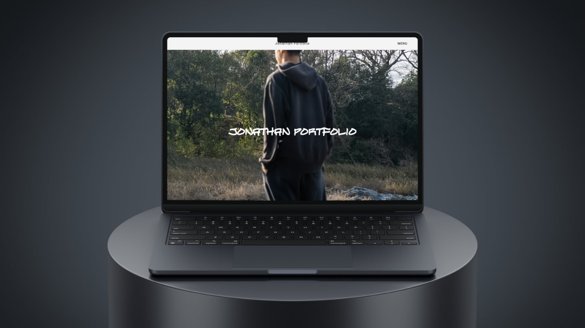
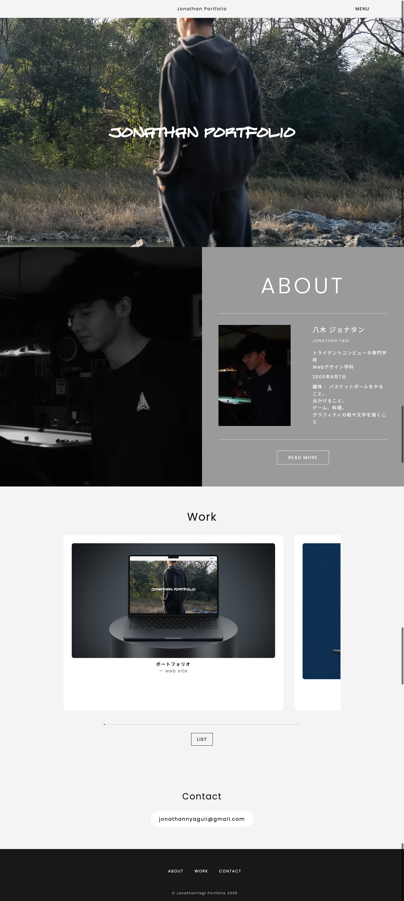
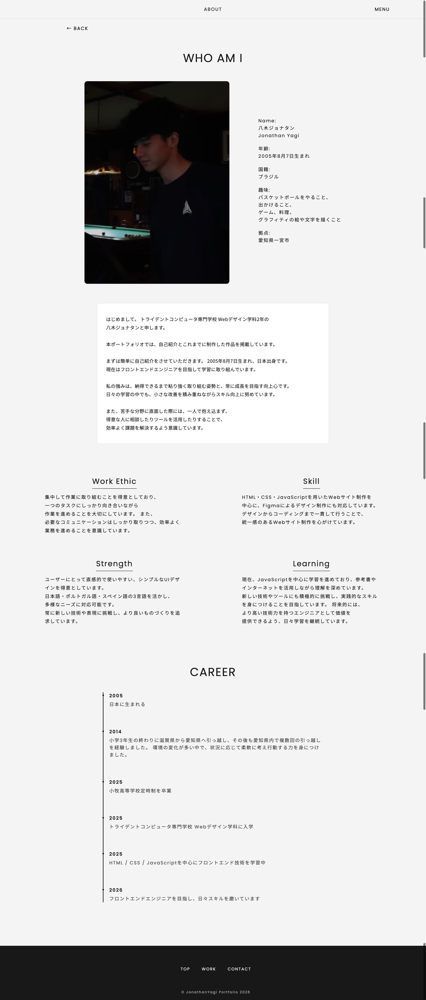

ポートフォリオ


Overview
本制作は、Kawasaki Ninja H2をテーマにしたコンセプトWebサイトです。 バイクの持つ圧倒的な存在感やスピード感を、Web上で体験できるようにデザイン・開発を行いました。 実際の企業サイトを意識し、ブランドイメージを損なわない高級感のあるデザインと、 没入感のあるアニメーション表現を目指して制作しています。
Purpose
Three.jsやReactを活用した3D表現やアニメーション技術を取り入れ、 フロントエンド開発のスキルを企業へアピールすることを目的として制作しました。 また、デザインだけでなく、ユーザー体験（UX）を意識したWebサイト制作にも挑戦しました。
Target
・Kawasakiブランドに興味のある方
・バイクが好きな方
・企業の採用担当者
・Web制作会社・クリエイティブ業界の担当者
・3D表現を活用したWebデザインに興味がある方
Design
Ninja H2の持つ高性能で洗練されたイメージを表現するため、 ブラックをベースにグリーンをアクセントカラーとして採用しました。 また、余白を活かしたレイアウトと大きなビジュアルを組み合わせ、 高級感と迫力を感じられるデザインを意識しています。
User Experience (UX)
スクロール操作に合わせて3Dモデルが動く演出を取り入れ、 ユーザーがページを読み進めるだけでバイクを様々な角度から楽しめる構成にしました。 コンテンツの表示タイミングにもアニメーションを加え、 自然な流れで情報を閲覧できるよう工夫しています。
Information Architecture
コンテンツは「Overview」「Engine」「Design」「Technology」「Specifications」 のようにテーマごとに整理し、 ユーザーが迷わず情報を閲覧できる構成にしました。 必要な情報だけをシンプルにまとめ、視線の流れも意識しています。
Technology
Reactをベースに開発を行い、Three.js（React Three Fiber）を使用して Kawasaki Ninja H2の3Dモデルを表示しました。 また、GSAPのScrollTriggerを利用し、 スクロールに連動してモデルの回転や位置、各セクションのアニメーションを制御しています。 レイアウトはCSSを中心に構築し、 レスポンシブデザインにも対応しています。
Coding
使用技術はHTML、CSS、JavaScript、React、React Three Fiber、 Three.js、GSAP（ScrollTrigger）、Viteです。 コンポーネント設計を意識しながら実装を進め、 3Dモデルの読み込みにはGLTF形式を使用しました。 アニメーション処理とUIの表示タイミングを細かく調整することで、 滑らかでストレスのない操作感を実現しています。
Challenges
制作の中で最も苦労した点は、 3Dモデルとスクロールアニメーションを連動させる部分です。 GSAPとReact Three Fiberを組み合わせる際、 モデルの位置や回転が思い通りに動かなかったり、 スクロール量との同期がずれてしまう問題がありました。 試行錯誤を重ねながら調整を行い、 自然な動きになるよう細かく改善しました。 この経験を通して、ライブラリ同士の連携やアニメーション設計について深く学ぶことができました。
What I Learned
この制作を通して、 デザインだけでなくユーザー体験を考えながら実装する重要性を学びました。 また、ReactやThree.js、GSAPを組み合わせた開発を経験したことで、 より高度なフロントエンド技術への理解を深めることができました。 今後はパフォーマンスの最適化や、さらにインタラクティブな演出にも挑戦していきたいと考えています。